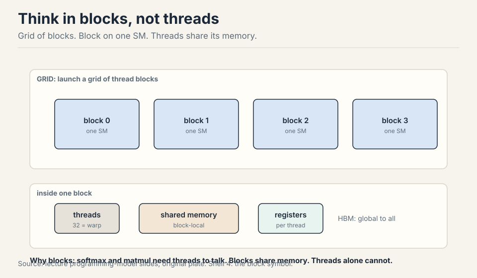
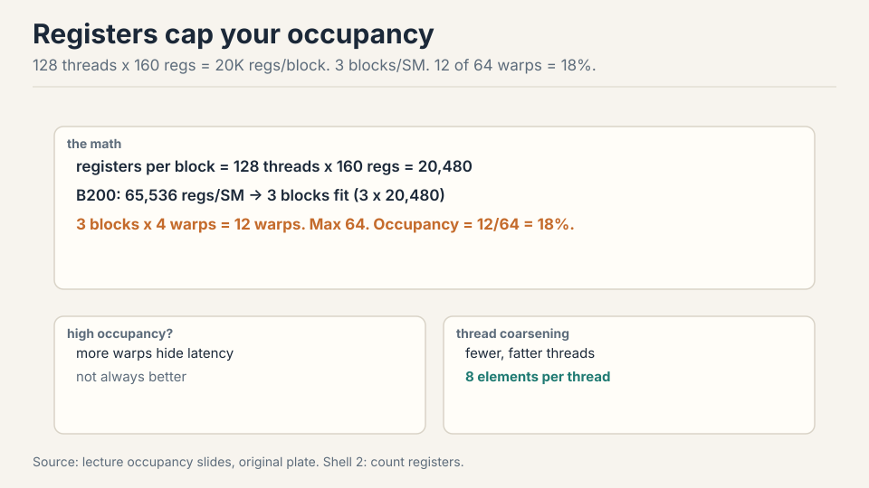
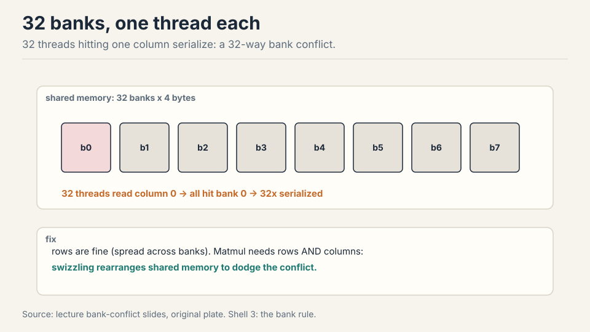
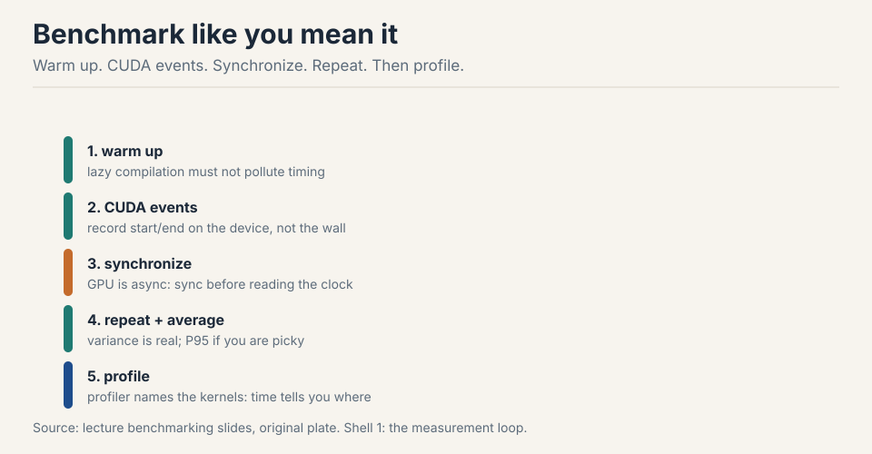
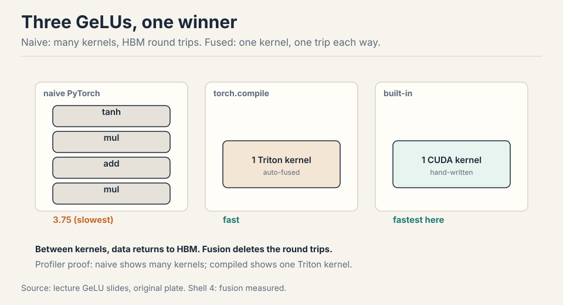
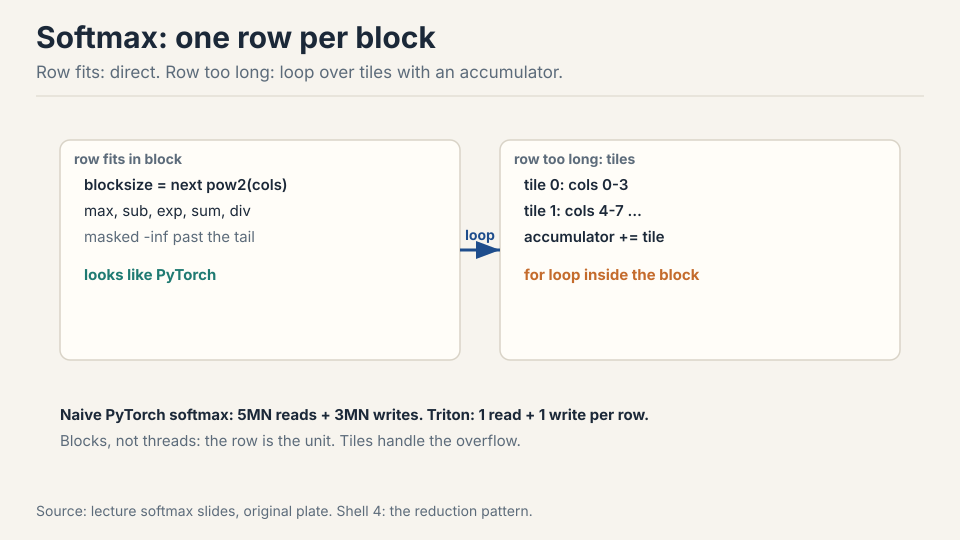
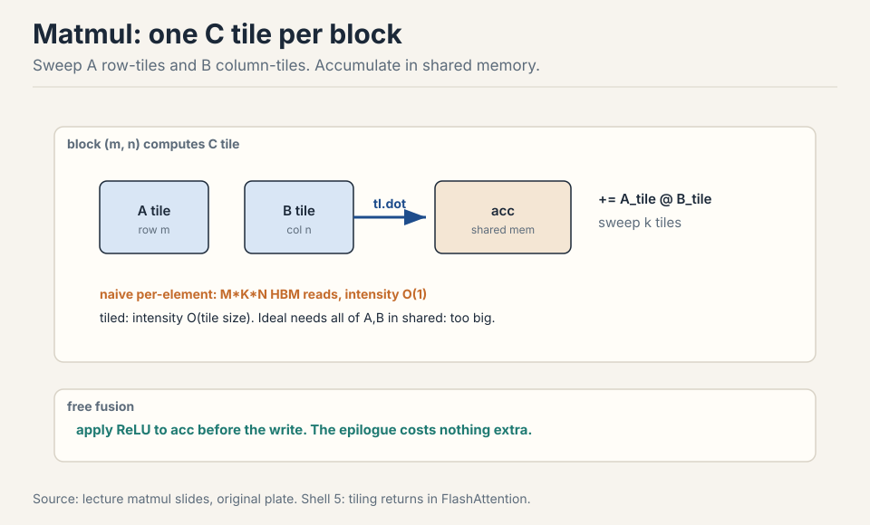

Lecture 6: Benchmarking, Profiling, and Triton Kernels
Video blocked (ad-blocker or local file mode).
Watch on YouTubeVideo not loading? Watch on YouTube
Original lecture. Percy Liang goes from benchmarking discipline to hand-written Triton kernels: GeLU, softmax, and tiled matmul.
How to read this lesson
This lesson has two levels. Level 1 (Core) covers measurement: benchmark rules, profiler reading, and the hardware details that decide performance. Level 2 (Deep) writes Triton kernels of increasing difficulty: elementwise, reduction, tiled reduction, matmul.
The philosophy: benchmark and profile first, change code second, measure again 21:49 ⏱21:49. Links back: Lecture 5 for the GPU model.
Level 1: The hardware, once more
Quick recap with numbers. SMs: 100-200 per GPU. Registers: 65K per thread-block budget class, 256K per SM on B200. L1/shared per SM, L2 chip-wide, HBM large and growing. Bandwidth runs inverse to size: registers fastest, HBM slowest at ~8 TB/s and still the bottleneck 00:30 ⏱00:30.
SMs : 100-200 per GPU registers : fastest, 256K per SM on B200 L1/shared : per SM. L2: chip-wide. HBM: ~8 TB/s, the bottleneck
Newer chips add wrinkles (H100/B200 thread-block clusters, tensor memory between registers and shared), but the model from Lecture 5 holds.
Level 1: Why thread blocks exist
Threads alone suffice for elementwise ops: GeLU maps one thread per element 04:34 ⏱04:34. Softmax and matmul need threads to communicate. The thread block is the unit that shares memory: one block lands on one SM, reads from HBM into shared memory, lets threads talk, writes back.

Triton is built on this: you specify what each block does, not what each thread does. For communicating ops, block-thinking removes CUDA’s synchronization bookkeeping 06:45 ⏱06:45.
Level 1: Warps, occupancy, bank conflicts
The programming model (threads, blocks, grid) gives correctness. The hardware (warps, banks, SM counts) decides speed 07:04 ⏱07:04.
Warps hide latency. 32 threads execute in lockstep. The SM runs many warps and switches between them at zero cost: while one warp waits 100 cycles on HBM, another runs tensor cores 10:14 ⏱10:14.
Occupancy is register math. Each thread caps at 255 registers. More registers per thread means fewer threads per SM.

Worked: 128 threads/block x 160 regs = ~20K regs/block. At 65K regs/SM, 3 blocks fit: 12 warps of 64 max = 18% occupancy 12:49 ⏱12:49. Low occupancy is not automatically bad: thread coarsening (one thread, 8 elements) does more work per thread with fewer threads, and the compiler does this for you in PTX 12:10 ⏱12:10.
Bank conflicts serialize shared memory. Shared memory has 32 banks of 4 bytes. One thread per bank per cycle. Thirty-two threads reading one column all hit bank 0: a 32-way conflict, 32x serialized 14:24 ⏱14:24. Matmul needs rows and columns, so conflicts are unavoidable by layout alone. Swizzling rearranges shared memory to dodge them.

Block count tails. With 148 SMs and 160 blocks, the last wave runs 12 blocks while 136 SMs idle. Size block counts to divide SM counts 18:15 ⏱18:15. (Same wave-quantization idea as Lecture 5’s tiles.)
Not necessarily. Occupancy measures how many warps are resident, not how much work gets done. If each thread does substantial work (high registers from thread coarsening), low occupancy with fat threads can beat high occupancy with thin threads. Fix occupancy when profiling shows the SM stalling for lack of ready warps. Otherwise, chase memory coalescing and tiling first: they move the needle more. Bank conflicts govern shared memory. It has 32 banks, one accessor per cycle, and conflicts serialize. Coalescing governs HBM: a warp’s accesses merge into 128-byte cache-line transactions. One is about on-chip parallelism, the other about off-chip bursts. Profile both. They fail independently.
Level 1: Benchmark rules
Benchmarking measures end-to-end time. It does not say where time goes, but it is the number you ultimately care about, and it shows scaling with dimension 22:36 ⏱22:36.

Rules: warm up first (lazy compilation pollutes the first run). Time with CUDA events recorded on the device, then synchronize: the GPU is async, and without the barrier you time nothing 24:41 ⏱24:41. Repeat and average. Use P95 if picky. Then scale the problem: matmul time is flat until dim ~2000, then grows cubically, because small matrices cannot fill the machine 25:55 ⏱25:55.
Level 1: Profiling reads the kernel names
Profiling says where time goes and what actually ran. PyTorch’s
profiler (Nsight in the assignment) reveals the kernels underneath
a + b and a @ b 26:25 ⏱26:25.
cutlass _ sm100 _ f32 _ 64x64x16 library arch dtype tile shape
The names are informative: cutlass (NVIDIA’s linear-algebra
library), sm100 (Blackwell), f32 (dtype), 64x64x16 (tile shape).
Change dimensions and the kernel changes: 128x128 picks a different
tile than 64x64. What looks like one PyTorch op is a dispatch over many
hand-tuned kernels 28:46 ⏱28:46.
Level 1: The GeLU race
Three implementations, same math: naive PyTorch, built-in, and torch.compile 30:14 ⏱30:14.

Naive builds the tanh approximation op by op: each primitive becomes a kernel, each kernel reads from HBM and writes back. Built-in is a single hand-written CUDA kernel. Compiled fuses the graph into one Triton kernel automatically. Timings: naive 3.75 (slowest), compiled fast, built-in fastest here (hardware-dependent, unoptimized demo) 32:00 ⏱32:00. The profiler proves it: many kernels vs one.
It launches one kernel per primitive (tanh, multiply, add), and between kernels every intermediate returns to HBM. The runtime is dominated by memory round trips, not arithmetic: the op is memory bound, so kernel count is the cost. The fused versions read once and write once. Same FLOPs, far fewer bytes moved. For correctness first: get the math right in PyTorch, verify against the built-in, then compile or hand-write the kernel. The lecture’s order is deliberate: naive for understanding, profiler for diagnosis, Triton for speed.
Level 2: The Triton kernel shape
Triton (OpenAI) trades CUDA’s per-thread control for per-block thinking: a block loads data, operates, writes back 36:51 ⏱36:51. It sits between PyTorch (whole tensors) and CUDA (single threads).
Every kernel follows one shape 39:44 ⏱39:44:

@triton.jit
def gelu_kernel(x_ptr, y_ptr, n, BLOCK: tl.constexpr):
pid = tl.program_id(0) # which block am I
offs = pid * BLOCK + tl.arange(0, BLOCK)
mask = offs < n # tail guard
x = tl.load(x_ptr + offs, mask=mask) # HBM -> registers
y = gelu(x) # compute
tl.store(y_ptr + offs, y, mask=mask) # write back
# launch: gelu_kernel[(n // BLOCK,)](x, y, n, BLOCK)
Pointers are integers (addresses). tl.load moves HBM into registers
or shared memory. The compiler decides which. The grid (n // BLOCK,)
says how many blocks run. Masking handles the ragged tail when n does
not divide BLOCK.
Underneath, Triton compiles to PTX: ld.global into registers,
arithmetic, st.global back 50:41 ⏱50:41. The PTX shows the
compiler’s thread coarsening: one thread processing 8 elements because
the per-element work was too thin. PTX is generated, not hand-written,
unless you believe you beat NVIDIA’s compiler.
Level 2: Softmax, one row per block
Naive PyTorch softmax: max, subtract, exp, sum, divide = 5MN reads + 3MN writes across separate kernels 59:40 ⏱59:40. Triton: one row per block, everything in one kernel.

Blocksize = next power of two above the column count. Masked-out tail elements become -inf (zero after softmax). If the row exceeds the block, loop over tiles: each thread accumulates its tile’s partial sum, then reduce across threads 65:23 ⏱65:23. Blocks do not share memory, so rows never interact: the decomposition is clean.
Level 2: Tiled matmul
Naive per-element kernel: for each C element, loop over k reading A and B from HBM. Reads scale as MxKxN: arithmetic intensity O(1), terrible 72:44 ⏱72:44.
Idealized: load all of A and B into shared memory, compute, write once. Reads O(n^2), intensity O(n). Impossible: matrices do not fit 75:55 ⏱75:55.
Tiled: globally naive, locally ideal. Each C tile gets one thread
block. The block sweeps row-tiles of A and column-tiles of B into
shared memory, accumulates tl.dot partials, writes the tile once.
Intensity rises to O(tile size) 76:14 ⏱76:14.

Bonus fusion: apply the ReLU to the accumulator before the write. The epilogue rides free 78:36 ⏱78:36. Strides map (row, col) to linear addresses. Transposes flip them 79:03 ⏱79:03.
The ladder of examples: elementwise (GeLU), reduction in one block (softmax), tiled reduction (long rows), tiled matmul. Each adds one idea. Together they are the full assignment toolkit, including FlashAttention.
The C tile is the natural unit of shared-memory reuse. Computing it needs one row-band of A and one column-band of B, which the block streams through shared memory in k-tiles. The accumulator lives in fast memory for the whole sweep, and the block writes HBM exactly once. Assigning finer units (per element) would forfeit the reuse. Coarser units would not fit in shared memory. On the accumulator, after the k-loop, before the single HBM write. The data is already in registers/shared memory, so the activation costs no extra memory traffic: the kernel was already going to touch every element once. This is the same fusion principle as the GeLU race, applied as an epilogue.
Recap: the whole lesson on one screen
Grid of blocks, each on one SM with shared memory. Threads own registers. Triton specifies per-block work. The compiler handles the rest.
Key: block = shared memory unit
128 threads x 160 regs: 3 blocks per SM, 12 of 64 warps, 18%. Low occupancy is fine if threads are fat. Measure stalls, not ratios.
Key: 12/64 = 18%
32 banks, one thread each per cycle. Column access: 32-way conflict. Matmul needs rows and columns. Swizzling dodges it.
Key: 32 banks x 4 bytes
Warm up, CUDA events, synchronize, repeat, profile. The GPU is async: no barrier, no measurement. Then scale the problem size.
Key: sync or it did not happen
Naive GeLU: many kernels, HBM round trips between each. Fused: one kernel, one read, one write. Profiler names prove it.
Key: kernels = round trips
Who am I, what do I read, compute, write back. Pointers are ints. Masks guard tails. The compiler picks registers vs shared.
Key: tl.load, tl.store
Softmax: one row per block. Row too long: tile loop with accumulator. 5MN+3MN accesses become one read and one write.
Key: row = block
One C tile per block, sweep k-tiles through shared memory, accumulate, write once. Intensity O(tile size). Fuse the epilogue free.
Key: globally naive, locally ideal
Official sources and further reading
Official: - Lecture 6 video and executable code (lecture_06.py): the GeLU race, softmax, and matmul kernels run live. - Triton language documentation and tutorials.
Further reading: - ThunderKittens and CUTLASS DSLs: alternatives below/above Triton for squeezing the last drops from new hardware.
Caveats from these sources. Kernel timings are hardware-dependent demo numbers, not guarantees. Register/SM counts are B200-era figures. Triton does not expose every new hardware feature: the last 10% needs lower-level tools.
Connections to the other courses
- CS336 later lectures: these kernels are the assignment toolkit. FlashAttention is the capstone kernel. Parallelism lectures reuse the block/grid mental model across devices.
- CS229S: Nsight profiling and the device block deepen here.
- CS229: the roofline/intensity diagnostic from Lecture 2 is what the profiler checks.
Triton cheatsheet. Model: grid of blocks. Block on one SM. Shared per block. Registers per thread. HBM global. Warps: 32 lockstep. Zero-cost switch hides HBM latency. Occupancy: limited by registers and the 64-warp cap. 18% example. Fat threads are fine. Banks: 32 by 4B. One thread per cycle. Swizzle to dodge conflicts. Coalesce: 128B lines. Blocks: divide SM counts. Bench: warmup, events, sync, repeat, scale. Profile: kernel names encode lib, arch, dtype, tile. GeLU: naive 3.75, fused wins. Triton shape: pid, offsets plus mask, tl.load, compute, tl.store. Softmax: one row per block. -inf mask. Tile loop if long. Matmul: C tile per block. k-sweep. Acc in shared. Fuse the epilogue. PTX: ld.global and st.global. Compiler coarsens. Alternatives: ThunderKittens, CUTLASS.
Blocks are the unit. Correctness lives in the programming model. Speed lives in the hardware details. Measure first, then write the kernel.
Sources
- VIDEOLecture 6 video, Stanford Online YouTube
- NOTESOfficial subtitle transcript (en-US)
- CODElecture_06.py, executable lecture code
- SUPPLEMENTTriton documentation and tutorials